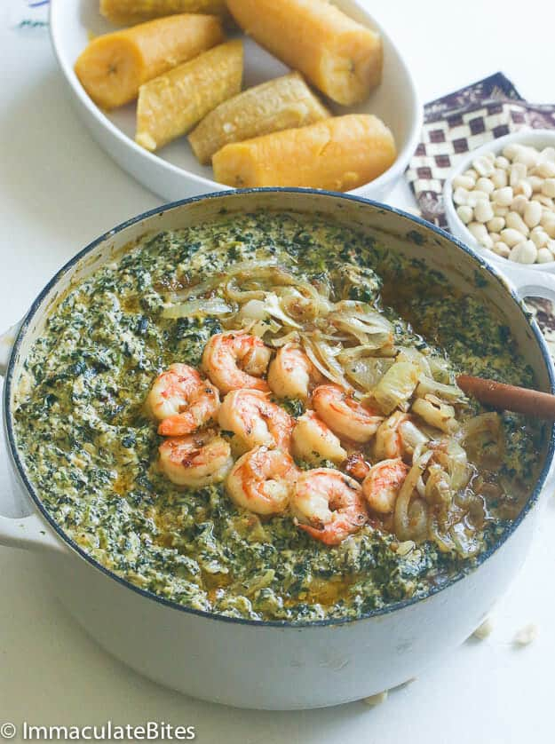

Ndole

Description
Ndolé is a flavorful Cameroonian dish featuring stewed peanuts and bitter leaves. It’s a national treasure on Cameroonian plates, celebrating the union of rich flavors.
Ingredients
- 3 cups washed bitter leaves
- 3 cups ground peanuts
- 5 cloves garlic
- 1 piece ginger
- 2 medium sized onions
- 1 Leek/spring onion
- 1/2 cup ground crayfish
- 1 cup oil
- 1/2 kg beef
- Salt and cube
- Pepper
- Shrimps/prawns to garnish
- Sweet potatoes or ripe plantain
Steps
- Soak the peanuts in water for about 1 hour and blend afterwards. Alternatively you can parboil the peanuts for about 5 mins.
- Blend the ginger, garlic, 1 onion, leeks, white pepper
- Boil the meat with half onion, 3 cups of water, pinch of salt and a cube (maggi) for about 20 mins until tender
- Warm 1/4 cup of oil in a pot. Put in 1/4 chopped onions and fry for about 30 secs.
- Pour in the peanuts and add 3 cups of water. Cook for about 15 mins. stir from time to time.
- Add to it the ginger, garlic, white pepper and leek mixture. stir properly
- Add the ndole (vegetables) in small quantities while stiring. Add the meat with stock, crayfish, hot pepper, cube and salt. Allow to simmer for 10-15 mins till thick.
- Add the ndole (vegetables) in small quantities while stiring. Add the meat with stock, crayfish, hot pepper, cube and salt. Allow to simmer for 10-15 mins till thick.
- Peel your sweet potatoes or ripe plantain and boil for 20 mins. You can boil with the peelings and peel afterwards.
- Serve your ndole hot with red wine. Bonne appetite.